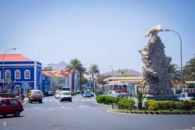
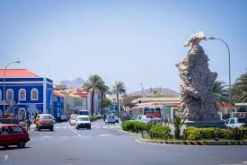

🇨🇻 CAP SUR LE CAP-VERT Entre l'Afrique et le Brésil, dix îles forment un pays où chacune cultive sa propre silhouette et son caractère. Aujourd'hui, focus sur Santo Antão et ses montagnes vertigineuses, Boa Vista et son désert de sable, São Nicolau la belle méconnue, Fogo façonnée par la lave, Maio l'esprit zen… Toutes partagent le même credo : « no stress ». Embarquez pour un archipel où l'on sait prendre son temps.
 

| Lieux à visiter | Description |
|---|---|
| Capitale | Santo Antao |
| ville | Praia |
| Musée | Sala-Museu Amilcar Cabral |
| La plage | Santa Monica Beach |
| Une ile | île de Santiago |